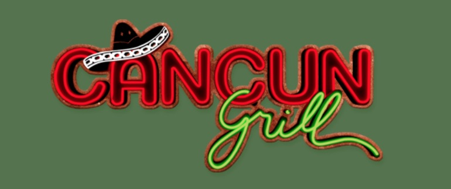
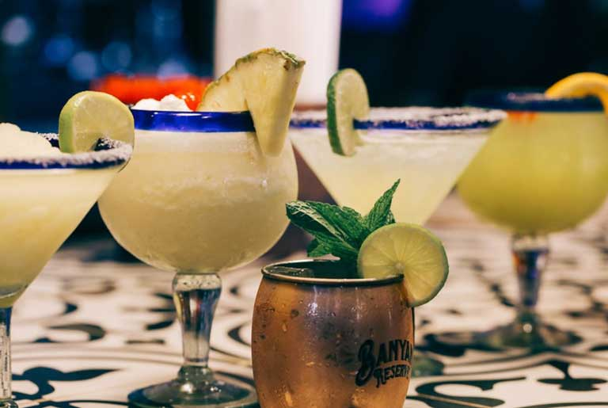
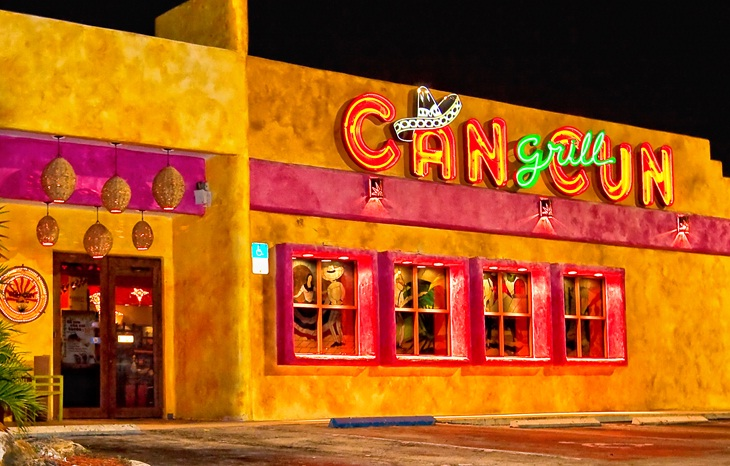

Our Mexican born owner and Executive Chef, Martin< Cardenas, upholds the traditions of the motherland with every aspect of Cancun Grill, especially the annual Cinco de Mayo celebration at Cancun Grill. If you want to celebrate in the true Mexican style and embrace what Cinco de Mayo is all about, come and join us! We offer authentic dishes, music and margaritas, Mexican beer, mariachis and other surprises for our friends of all ages to enjoy.

15406 NW 77th Ct, Hialeah, FL 33016
(305) 826-8571



Avocados, onions,jalapeños,cilantro, tomatoes and fresh lime juice
Your choice of skirt steak or chicken served with pico de gallo,sour cream, refried beans and mexican rice.
Tortilla chips with refried beans, mozzarella guacamole, sour cream and pico de gallo. Add steak, chicken or shrimp $2.50


Three tacos served with avocado salsa, cilantro, onions, lime, refried beans and Mexican rice.
Grilled Flour Tortilla, Mozzarella Cheese, Pico De Gallo, Sour Cream and Avocado Salsa
Brioche bun with grilled prime beef, gouda cheese, avocado mayo, grilled onions and tomatoes served with fries and pickled vegetables.


Sereved with sour cream, pico de gallo, guacamole, warm tortillas, refried beans and mexican rice.
Grilled chicken breast with onions and peppers served with charro beans and cilantro rice.
Grilled skirt steak roasted in onions, poblano peppers and served with refried beans and mexican rice.


Mexican style chicken soup served with Cheese, avocado and crispy tortillas.
Cuervo tradicional tequila, splash of citrinage, fresh lime juice and a splash of cointreau.
Custard dessert with a layer of soft caramel on top.
CAREERS
• Demonstrating genuine hospitality and helping to deliver an exceptional Dining Experience by
• Engaging in friendly conversation as you seat guests in a timely fashion
• Introducing guests to their server
• Managing restaurant waiting list during high volume to accurately set guest expectations
• Clearing, cleaning and resetting tables to ensure they are ready for the next guest
• Always sincerely thanking guests as they leave and inviting them to return
• Preparing high quality food items to order for our guests
• Following recipe and presentation guidelines to meet or exceed guests’ expectations
• Coordinating food orders to support timely and efficient delivery to each table
• Ensuring proper food safety and sanitation standards to ensure guest safety
• Meeting special guest requests while ensuring same high quality standards
the Cancun Grill Core Values. Successful performance is measured by consistent delivery of balanced results through our systems, methods
and procedures from the perspective of all our stakeholders. This leads to sustained growth in sales and profits achieved through personal,
people, business and results leadership.
Job Requirements
• Current , salaried management experience in a high- volume full service restaurant is preferred
• Strong passion for culinary excellence and guest service
• Proven ability to develop team
• Knowledge of systems, methods and processes that contribute to great execution
• Stable job history which demonstrates upward career and salary progression